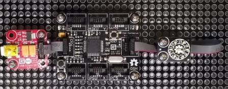

Version: 0.9.0
Led7C is connected as followed on Cerberus:

| Led7R | Mainboard |
|---|---|
| Socket Type Y | Socket 4 |
using System.Diagnostics;
using System.Threading;
using Bauland.Gadgeteer;
using GHIElectronics.TinyCLR.Pins;
namespace TestLed7R
{
static class Program
{
static void Main()
{
int timeout = 2000;
// Led7R connected on Socket 4 (Type Y) of FEZ Cerberus mainboard.
Led7R led7R = new Led7R(FEZCerberus.GpioPin.Socket4.Pin3, FEZCerberus.GpioPin.Socket4.Pin4, FEZCerberus.GpioPin.Socket4.Pin5, FEZCerberus.GpioPin.Socket4.Pin6, FEZCerberus.GpioPin.Socket4.Pin7, FEZCerberus.GpioPin.Socket4.Pin8, FEZCerberus.GpioPin.Socket4.Pin9);
while (true)
{
Debug.WriteLine("Switch off all led");
led7R.TurnAllLedsOff();
Thread.Sleep(timeout);
Debug.WriteLine("Turn on only Led 3");
led7R.SetLed(3,true);
Thread.Sleep(timeout);
Debug.WriteLine("Set led state according to a mask 0x5c");
led7R.TurnAllLedsOff();
led7R.SetBitmask(0x5c);
Thread.Sleep(timeout);
Debug.WriteLine("Set led state according to a percentage value: 0.75");
led7R.TurnAllLedsOff();
led7R.SetPercentage(0.75);
Thread.Sleep(timeout);
Debug.WriteLine("Turn on one specific led");
led7R.TurnAllLedsOff();
Thread.Sleep(500);
for (int i = 0; i < 7; i++)
{
led7R.TurnLedOn(i);
Thread.Sleep(500);
}
Thread.Sleep(timeout);
Debug.WriteLine("Animate module");
led7R.TurnAllLedsOff();
Thread.Sleep(500);
led7R.Animate(500,false,true,false);
Thread.Sleep(timeout);
}
}
}
}